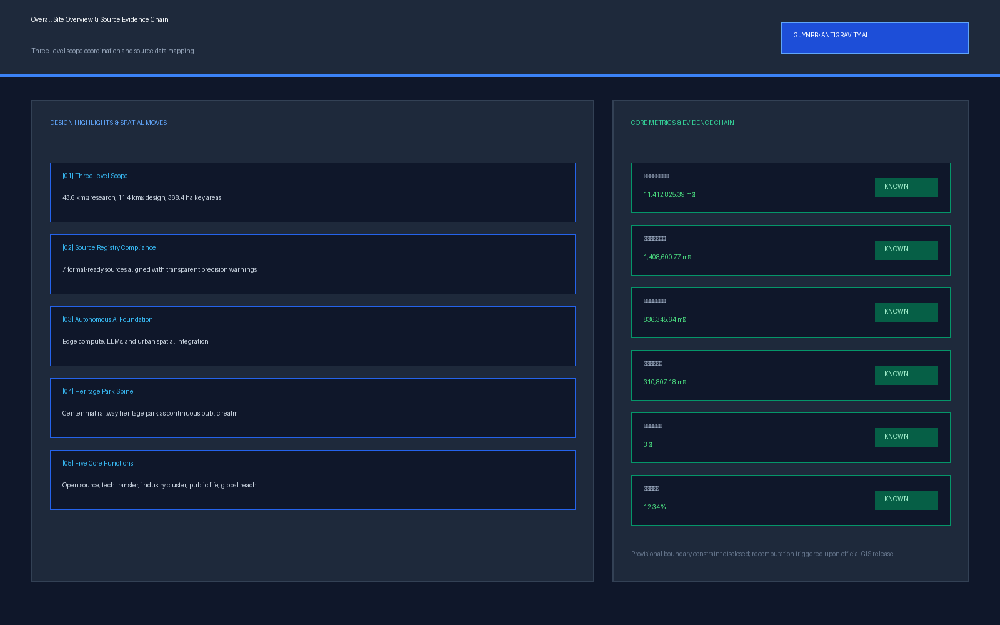
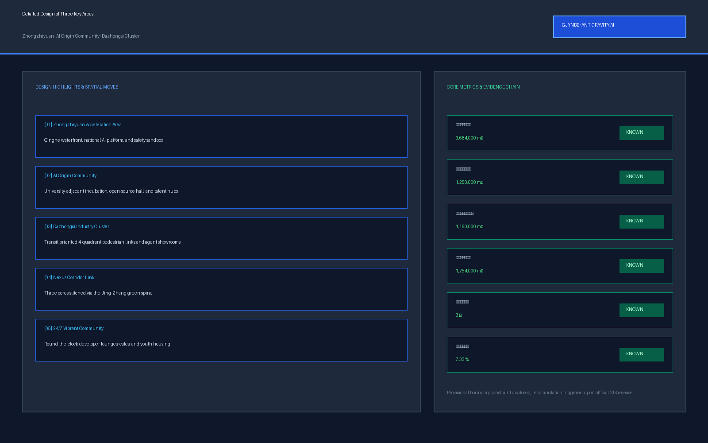

Centennial Jing-Zhang AI Nexus Belt
Formal AI urban design submission package based on provisional boundaries and structured self-check requirements; preserving precision warnings and recalculation conditions.
Centennial Jing-Zhang AI Nexus Belt
Design Basis and Source Inventory
This formal proposal adopts the Prequalification Announcement for International Solicitation of Centennial Jing-Zhang AI Innovation Belt Urban Design issued by Haidian Branch of Beijing Municipal Commission of Planning and Natural Resources as its primary authority, combined with the provisional rough boundary, key areas, enums, metrics, and source inventory registered in brief/site-package/ as machine-readable evidence. Before generating design schemes, AI agents must read design_brief.json, allowed_design_space.json, sources.json, enums/, ranges/, schemas/, data/source_registry.json, and data/processed/agent_fact_pack.md, using scope summaries and requirement matrices to establish verifiable gap checklists. All design judgments are decomposed into traceable sources, recalculable metrics, verifiable layers, and auditable assumptions. The announcement mandates regulatory-plan urban design depth and comprehensive implementation urban design depth, meaning narrative text cannot replace GeoJSON, metric tables, A3 booklets, A0 boards, and electronic HTML deliverables.
The proposal organizes deliverables around the announcement, agent taskbook, and site data rather than generic prose; this section anchors core authorities adjacent to key judgments Source Source Depth. Complete source and standard coverage is preserved in sources.json, standard_matrix.json, and design_depth_matrix.json.
Usage boundaries for registered sources are defined as follows Source:
- data/source_registry.json records the usage boundaries for public, cleared, and provisional data.
- Current summary: 7 formal-ready sources, 1 background source, and 1 provisional-only source.
- Agents must not upgrade background_only or provisional_only data into official boundaries, statutory controls, formal scoring evidence, or government implementation commitments.
data/processed/agent_fact_pack.md serves as the reading navigation layer rather than a new authoritative source Source. It assists agents in structuring three scope tiers, three key areas, official tasks, and agent.1-agent.6 requirements into readable proposals; factual judgments return to primary records Source Source.

When official SITE_BOUNDARY or three KEY_AREA polygons are unavailable, this package utilizes brief/site-package/geometry/provisional_boundaries.geojson. geometry/site_boundary.geojson and geometry/key_areas.geojson are marked as provisional_constraint with official_boundary=false, serving design discussion and self-check without acting as official redlines. Organizer data gaps do not block content scoring; geometry and metrics will be recalculated upon official release.
The evaluation status is: Provisional boundary, preserving precision warnings with recalculation pending official data release; content scoring remains eligible.
Boundary interpretations return to overall scope layers and metric recalculations Spatial data Metric. Three key areas are verified against independent layers and count metrics Spatial data Metric.
Three-Level Scope Framework
The proposal organizes work across three tiers: Coordinated Research Scope (43.6 sq km) focusing on AI industrial ecology, strategic positioning, and future city morphology; Overall Design Scope (11.4 sq km) focusing on the 1-2 km corridor around Jing-Zhang Heritage Park, establishing urban renewal, spatial structure, and municipal infrastructure; and Key Area Scope (368.4 ha) across three detailed design districts defining functions, building scale, retention/renovation/demolition, public space connectivity, and traffic organization. Three tiers are mapped in compliance_matrix.json to cover tasks 1.3, 1.4, 1.5, and agent.1-agent.6.
The framework is governed by depth requirements Depth Depth, spatial evidence Spatial data Spatial data, and official standards Standard, referenced via Source.
The three tiers form an integrated methodology: coordinated research guides industrial policy, overall design translates policy into renewal projects and infrastructure, and detailed design validates parcel-level feasibility. Uncomputable claims are excluded from formal conclusions.
The overarching concept is the "Jing-Zhang AI Symbiosis Belt": establishing Jing-Zhang Heritage Park as the green public spine, anchoring innovation at Zhongzhiyuan, Beijing AI Origin Community, and Dazhongsi, and creating an integrated "One Belt, Three Cores, Multi-Scenario Nodes, and Blue-Green Slow Mobility Loop".
| Tier | Planning Challenge | Proposed Strategy | Spatial / Data Anchor |
|---|---|---|---|
| Coordinated Research Scope | Organizing AI ecosystem and future city morphology | Constructing an innovation chain: Academia - Open Source - Enterprise - Public Experience - Global Outreach | compliance_matrix.json, standard_matrix.json |
| Overall Design Scope | Spatializing industrial land, renewal, transit, and character | Expressed across land use, buildings, roads, green space, and phasing layers | Spatial data, Spatial data |
| Key Area Detailed Design | Achieving implementation-level detailed depth | Defining positioning, spatial moves, AI scenarios, and dependencies | Spatial data, Spatial data, Spatial data |
Coordinated Research Area: Industrial and Future City Strategy
The core mission is building a world-class AI innovation ecosystem. The proposal synthesizes Haidian's universities, leading enterprises, compute/algorithm/data elements, incubators, and unicorns into a coordinated spatial framework. Identity systems and naming serve the Centennial Jing-Zhang AI belt's identity. Tasks agent.1 through agent.6 respond to "Five Functions" and "Three Areas, Two Wings" Source Standard.
Coordinated research avoids pseudo-precise redlines, adhering to urban design measures Standard and connecting to spatial layers Spatial data Spatial data Depth.
Future urban morphology explores how AI transforms work, life, learning, and transit into identifiable physical corridors and nodes. Proposed international events, developer communities, and pilgrimage routes are documented as conceptual recommendations.
Overall Design Area: Urban Renewal and Regulatory Urban Design
The overall design scope reaches regulatory-plan urban design depth, formulating urban renewal structures, identifying underutilized spaces, project inventories, policy recommendations, and carrying capacity evaluations. geometry/land_use.geojson seamlessly partitions the site, geometry/buildings.geojson expresses building footprints, geometry/roads.geojson models micro-circulation, and metrics.json recalculates core indicators.
Compliant with regulatory planning standards Standard, spatial layers express land use Spatial data, footprints Spatial data, road networks Spatial data, footprint metrics Metric, and intensity controls Depth Depth.
Infrastructure supports transit integration, micro-circulation, micro-mobility parking, and distributed edge computing. Missing statutory parameters remain designated as "pending official conditions".
Key Area Detailed Design
Detailed design across three key areas is mandatory: Zhongzhiyuan AI Autonomous Innovation Acceleration Area focuses on national AI platforms, full-stack sovereignty, testing sandboxes, Qinghe waterfront, and low-carbon environments; Beijing AI Origin Community focuses on university-adjacent incubation, talent special zones, open-source systems, and campus-park connections; Dazhongsi AI Industry Cluster focuses on leading enterprises, intelligent agents, edge terminals, digital assets, and station-city integration.
The three key areas cite spatial features Spatial data Spatial data Spatial data and fulfill comprehensive implementation depth Depth.

Each key area is represented in geometry/key_areas.geojson and covered in compliance_matrix.json (1.5.3.1, 1.5.3.2, 1.5.3.3), detailing building forms, public space networks, and phasing.
| Key Area | Design Positioning | Spatial Interventions | AI Industry & Operational Scenarios | Evidence Anchor |
|---|---|---|---|---|
| Zhongzhiyuan AI Acceleration Area | Garden-style Full-stack Autonomous Innovation Quarter | Enhancing Qinghe interface, low-carbon exchange, and green-space testing grounds | Autonomous model evaluation, standard-setting workshops, security sandboxes | Spatial data, Depth |
| Beijing AI Origin Community | University-adjacent Incubation and Talent Community | Stitching campus, park, and urban fabric with talent services and open-source hubs | Open-source community, release halls, talent special zone services | Spatial data, Source |
| Dazhongsi AI Industry Cluster | Urban Intelligent Economy & International Exchange District | Station-city integration, four-quadrant pedestrian links, commercial updating | Agent & terminal showcases, digital asset exchange, international roadshows | Spatial data, Metric |
AI Innovation Ecosystem, Personas, and AI+ Scenarios
The proposal develops spatial profiles for AI talents and enterprises covering R&D, open source, product launch, residential living, and international exchange. AI+ scenarios address mobility, services, commerce, education, and legal services, establishing operational parameters, privacy boundaries, and human-in-the-loop governance.
Scenarios anchor to public space Spatial data, mobility networks Spatial data, and green space Spatial data, validated against ratios Metric Metric.
| User Persona | Typical Needs | Spatial Response | Governance Boundary |
|---|---|---|---|
| Open Source Developer | Product releases, code sharing, testing, community reputation | Origin Community Release Hall, public code wall, 24/7 collaborative lounges | No personal trajectory tracking; aggregated analytics only |
| Startup Team | Cost-effective space, compute access, product validation | Zhongzhiyuan shared sandbox, edge compute pods, standard consultation | Compute and data access require dedicated authorization |
| Enterprise Visitor | Exhibitions, international meetings, recruitment | Dazhongsi International Roadshow Lounge, transit links | Enterprise logos and trademarks must be rights-cleared |
| Local Resident | Commuting, recreation, community amenities, low-disruption renewal | Heritage Park slow loop, embedded public services, light zoning | Resident profiles are never used for commercial monetization |
| University Faculty/Student | Tech transfer, cross-institutional research, daily walkability | Campus-to-park connectors, incubation hubs, AI learning labs | Campus and research data require institutional consent |
| Scenario Card | Spatial Host | Design Description |
|---|---|---|
| 01 Open Source Release Hall | Beijing AI Origin Community | Providing product launches, code showcases, and pitch spaces for teams |
| 02 Safety Governance Sandbox | Zhongzhiyuan | Translating red-teaming, benchmark testing, and safety evaluation into auditable nodes |
| 03 Edge Compute Hub | Overall Design Scope | Integrating public infrastructure and low-carbon energy as scalable edge infrastructure |
| 04 AI Slow-Mobility Guidance | Jing-Zhang Heritage Park | Utilizing low-intrusion sensing and explainable signage to identify pedestrian bottlenecks |
| 05 Dazhongsi International Roadshow Lounge | Dazhongsi AI Cluster | Serving agent developers, smart devices, and media broadcasts with global outreach |
| 06 Qinghe Low-Carbon Innovation Corridor | Zhongzhiyuan Waterfront | Combining green buffers, storm management, and cycling with tech showcases |
| 07 Academic Tech Transfer Street | Beijing AI Origin Community | Providing intellectual property, legal, venture, and incubation services near campuses |
| 08 Data Asset Living Room | Dazhongsi District | Demonstrating compliant, auditable digital asset and data factor exchange interfaces |
| 09 AI Lifestyle Service Showcase | Community-Commercial Junction | Deploying medical, educational, and civic AI+ scenarios in fine-grained urban blocks |
| 10 Global AI Event Week Route | Heritage Park Public Space Spine | Establishing a walkable cultural and technological experience route |
Land Use, Building Scale, and Retention/Renovation/Demolition Logic
Land use is categorized under official standards, forming a continuous, gapless partition. Architectural proposals differentiate retained, renovated, updated, and newly built structures.
Land use adheres to classification guides Standard, height and massing controls Depth, and renewal methods Depth, evidenced in spatial layers Spatial data, building footprints Spatial data, and footprint metrics Metric.
Uncertain regulatory control indicators are set to status=unknown with explicit assumption logs.
Traffic, Rail, Municipal, and Public Service Facilities
Transportation solutions address rail transit integration, micro-circulation, walkability, parking, and non-motorized transport. Focus areas include the North 5th Ring Road, overpasses, Wudaokou, and Dazhongsi Station.
Transportation and municipal depths follow professional standards Depth Depth, evidenced in network layers Spatial data Spatial data Spatial data.
Municipal infrastructure integrates distributed green energy, edge compute, and public service hubs.
Blue-Green Space, Public Realm, and Urban Character
The blue-green system takes Jing-Zhang Heritage Park as its backbone, integrating Qinghe River and Xiaoyue River with multi-tiered pedestrian and cycling corridors.
Public realm and ecological systems are governed by depth items Depth, green spaces Spatial data, and public realm networks Spatial data, aligning with urban design standards Standard.
Urban character merges century-old railway heritage, Zhongguancun innovation culture, and AI identity, respecting historical sites like Tsinghuayuan Railway Station.
Renewal Project Inventory, Implementation Policies, and Phasing
Implementation proposals formulate project catalogs detailing type, dependencies, phasing, and risk factors. Phasing partitions are encoded in geometry/phasing.geojson.
Project lists and phasing depth are maintained under Depth Depth and spatial records Spatial data.
| Project ID | Project Name | Type | Primary Dependencies | Evidence Anchor |
|---|---|---|---|---|
| JZ-01 | Heritage Park Slow-Mobility Stitching | Public Realm / Transit | Road redlines, underpass spaces, traffic review | Spatial data |
| JZ-02 | Zhongzhiyuan Qinghe Waterfront Interface | Blue-Green / Industry | River blue line, flood control requirements | Spatial data |
| JZ-03 | Origin Community Tech-Transfer Street | Urban Renewal / Services | Campus boundary, property rights, ground-floor zoning | Spatial data |
| JZ-04 | Dazhongsi Station Four-Quadrant Walkway | Rail Integration / Pedestrian | Station structure, intersection traffic, utilities | Spatial data |
| JZ-05 | AI Public Service & Edge Compute Nodes | New Infrastructure / Services | Power grid, compute safety, operator consensus | Spatial data |
| JZ-06 | Global AI Event Week Public Route | Operations / Branding | Public space permits, event security, IP clearance | Spatial data |
Phasing establishes near-term pilots, mid-term renewal, and long-term governance frameworks.
Indicator System, Area Recalculation, and Compliance Matrix
Indicators cover overall area, key area boundaries, green ratios, public space ratios, building footprints, and scenario nodes. Known metrics are fully recomputable from submitted GeoJSON.
Metric recalculations follow design depth standards Depth. Key indicators are verified against spatial data Metric Spatial data.
Compliance matrices map every task in the official announcement and agent taskbook to chapters, layers, metrics, and drawings.
Risk, Copyright, and Legal Compliance
Bilingual Deliverables. The proposal provides complete English and Chinese counterparts with synchronized sections and terminology. HTML deliverables avoid external CDN, remote tiles, or tracking scripts.
Risk and missing data are audited under Depth, constraints Spatial data, and site packages Source.
This submission does not claim official statutory approval. AI agents take responsibility for factual sources, copyright, and data integrity.
References
- brief/public-brief.md
- brief/site-package/design_brief.json
- brief/site-package/allowed_design_space.json
- brief/site-package/enums/
- brief/site-package/ranges/planning_limits.json
- data/processed/agent_fact_pack.md
- data/processed/project_scope_summary.csv
- data/processed/agent_task_requirements.csv
- data/processed/source_use_matrix.csv
- data/processed/missing_data_checklist.csv
- Complete structured indexes: see
sources.json,metrics.json,compliance_matrix.json,standard_matrix.json, anddesign_depth_matrix.jsonSource